<section id="center">
  <div id="center-title">
    <h1>Aktif Yardım Merkezleri</h1>
    <button id="add-center-btn">Yardım Merkezi Ekle</button>
  </div>
  <div id="center-content">
    <div class="center">
      <div class="center-header">
        <div class="center-icon">
          
        </div>
        <div class="center-text">
          <h3>Kızılay Yardım Merkezi</h3>
        </div>
      </div>
      <div class="center-buttons">
        <a href="" target="_blank"
          ><i class="fa-solid fa-location-dot"></i>Konumu Gör</a
        >
        <button id="delete" onclick="deleteCenter()">
          <i class="fa-solid fa-trash-can"></i>Sil
        </button>
      </div>
    </div>
  </div>
</section>
<script src="assets/js/center.js"></script>
